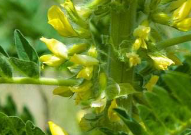

Specie: Trifolium pallescens
Taxonomy: Fabaceae; Papilionoideae; 50 kb inversion clade; NPAAA clade; Hologalegina; IRL clade; Trifolieae; Trifolium
Abbr: Tpa
Level: Chromosome
chromosome number: 2n=2X=8

Introduction: Plante assez proche de T.nigrescens et de T. thalii, sachant qu'elle peut partager le biotope que cette dernière espèce. Se distingue de T. nigrescens par le fait qu'elle est vivace et croît plus en altitude. Diffère de T. thalii par ses pédicelles floraux allongés à maturité donnant un aspect plus lâche à l'inflorescence. Se rencontre dans les milieux rocailleux et les pelouses maigres d'altitude.
Distribution: Albania, Austria, Bulgaria, France, Greece, Italy, Romania, Spain, Switzerland, Ukraine, Yugoslavia
Article Title: Breaking Free: The Genomics of Allopolyploidy-Facilitated Niche Expansion in White Clover
Data source: Original sequence data from this article can be found in the EMBL/GenBank data libraries with the following accession numbers.